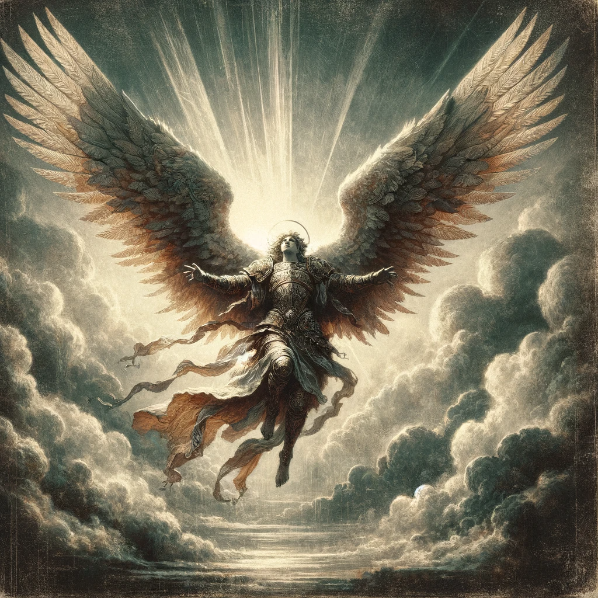

Description
The Angels are a class of divine beings that have been sent to the mortal world to bring balance to the chaos of the world. They are a powerful force of good and have been given the charge to protect the people of ancient Greece from evil forces.
Hit Points:
- Hit Die: 1d10 per Angel Level
- Hit Points at 1st Level: 10 + Constitution Modifier
- Hit Points at Higher Levels: 1d10 + Constitution Modifier per Angel Level after 1st
Proficiencies:
- Armor: All Armor, Shields
- Weapons: Simple Weapons, Martial Weapons
- Tools: None
- Saving Throws: Wisdom, Charisma
- Skills: Choose two: Athletics, Insight, Intimidation, Medicine, Persuasion, and Religion
Starting Equipment:
Lvl 1: Radiant Messenger
- Divine Smite (Bonus Action): You can call upon divine energy to smite your foes with divine fire, doing 1d8 radiant damage. Range of 50ft. Cantrip.
- Angelic Bond (Action): You are able to summon an angel to act as your companion and protector. It is a medium-sized divine creature with 5 HP, 12 AC, and +2 to hit DC, equipped with a short sword (1d6) and shield. Last 10 turns and can be used once per long rest. Levels with your Angel stats.
Lvl 2: Celestial Advocate
- Angelic Wings (Passive): You are able to sprout feathered wings and gain a fly speed equal to your base movement speed. Can fly up to 100ft and can carry a load of 75 lbs when flying.
Lvl 3: Heavenly Guardian
- Angelic Armaments (Action): You can summon weapons made of divine light, such as swords, spears, and shields. Each piece of equipment summoned last 3 turns, has base stats of said weaponry, requires known knowledge of the said weaponry, and requires concentration to stay summoned. Can be used once per short rest. When summoning a ranged weapon, an unlimited supply of ammo for that weapon is allowed.
Lvl 4: Seraphic Champion
- Divine Intervention (Bonus Action): You can call upon the gods to intercede on your behalf, granting you an advantage on any roll or allowing you to re-roll a failed roll. Can be used once per short rest.
Lvl 5: Divine Protector
- Heavenly Radiance (Action): You can emit a blinding light from your body, blinding any creatures within 30 feet. The radius of the light affects a cube-shaped area. Can be used 3 times per long rest.
- Angelic Form (Bonus Action): You can assume the form of a heavenly angel, gaining a +5 to AC. Can be used 5 times per short rest.
Lvl 6: Celestial Sage
- Celestial Wrath (Bonus Action): You can call upon the fury of the heavens to rain down divine fire upon your enemies, dealing 3d8 radiant damage. Up to 3 enemies can be selected at once. Range 30ft. Cantrip.
Lvl 7: Heavenly Harbinger
- Divine Blessing (Bonus Action): You can grant a creature a blessing from the gods, granting them an advantage on all attack rolls and a +4 bonus to AC. Last 10 rounds and can be used once per short rest.
Lvl 8: Devine Savant
- Angelic Ascension (Action): You can transform into a being of pure light and energy, becoming immune to physical damage and gaining +5 to all saving throws. Unable to use bonus actions, wings, or backpack items during this time and last until the end of the next long rest. Takes 2 long rests to be reactivated.
Lvl 9: Celestial Vanquisher
- Angelic Aura (Passive): You can emit an aura of divine protection, granting all friendly creatures within 30 feet a +2 bonus to AC and all saving throws. Effects last until the end of combat. User counts themselves as a friendly. Passive ability that activates once combat is initiated.
- Angelic Judgment (Bonus Action): You can call upon the gods to judge an enemy, granting them a disadvantage on all attack rolls and saving throws for 3 rounds. Can be used 5 times per short rest.
Lvl 10: God of the Sky
- Divine Retribution (Bonus Action): You can call upon the gods to smite your enemies, dealing 7d8 radiant damage and pushing them back 20 feet. Range 50ft. DC DEX saving throw is required, on fail, enemies affected also become prone until a saving throw is successful.